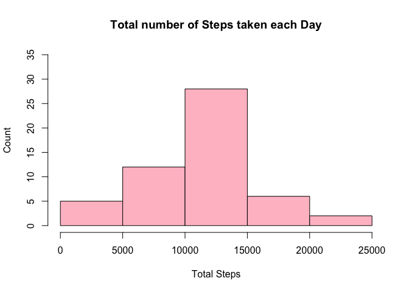

Reproducible Research: Programming Assignment
Line Ettrich
3/22/2020
Pre- Preperations
- Setting preferences for knitr
knitr::opts_chunk$set(echo = TRUE)Loading and Preprocessing the Data
Step 1: Downloading and Unzipping the Data
if(!file.exists("./Data5")){dir.create("./Data5")}
fileUrl <- "https://d396qusza40orc.cloudfront.net/repdata%2Fdata%2Factivity.zip"
download.file(fileUrl,destfile="./Data5/ActivityMonitoring.zip")
unzip(zipfile="./Data5/ActivityMonitoring.zip",exdir="./Data5")Step 2: Reading the File
ActivityMonitoring <- read.csv("./Data5/activity.csv", header = TRUE)Step 3: Reformatting the Date variable and Omitting NA’s to transform the data into a format suitable for the analysis
- for the first few parts, the missing values will be omitted to do the analysis
ActivityMonitoring$date <- format(as.Date(ActivityMonitoring$date), "%d/%m/%y")
ActivityMonitoring2 <- na.omit(ActivityMonitoring)What is mean total number of steps taken per day?
Loading the neccessary Packages (dplyr)
library(dplyr)##
## Attaching package: 'dplyr'## The following objects are masked from 'package:stats':
##
## filter, lag## The following objects are masked from 'package:base':
##
## intersect, setdiff, setequal, unionStep 1: Calculating the Total Number of Steps per Day
Stepsperday <- ActivityMonitoring2 %>%
group_by(date) %>%
summarize(TotalSteps=sum(steps))Step 2: Constructing the Histogram for the Total Number of Steps taken each Day
hist(Stepsperday$TotalSteps,
main = "Total number of Steps taken each Day",
xlab = "Total Steps",
ylab = "Count",
col = "pink",
ylim = c(0, 35))
Step 3: Calculating the Mean and Median Number of Steps taken each Day
MeanSteps <- mean(Stepsperday$TotalSteps)
MedianSteps<- median(Stepsperday$TotalSteps)What is the average daily activity pattern?
Step 1: Calculating the Average Steps per Day
AverageSteps <- ActivityMonitoring2 %>%
group_by(interval) %>%
summarize(AveSteps=mean(steps))Step 2: Constructing a Time Series Plot for the Average Steps
plot(AverageSteps$interval, AverageSteps$AveSteps,
type="l",
xlab="Interval",
ylab="Average steps",
main="Average steps taken during 5 minute interval",
cex.main = 1)
Step 3: Calculating the 5-minute Interval that, on average, contains the maximum Number of Steps
max_interval <- AverageSteps[which.max(AverageSteps$AveSteps),1]
max_interval## # A tibble: 1 x 1
## interval
## <int>
## 1 835Imputing missing values
Step 1: Calculating the Total Number of NA’s in the Dataset
MissingValuesActivity <- is.na(ActivityMonitoring$steps)
sum(MissingValuesActivity)## [1] 2304Step: 2 Creating New Dataset in which Missing Values are replaced with averages
- I chose to replace the missing values with the averages for the 5 min intervals
- Below you finde the code that describes and shows the strategy for imputing missing data
NewActivityMonitoring <- ActivityMonitoring
for (i in 1:nrow(NewActivityMonitoring)) {
if (is.na(NewActivityMonitoring$steps[i])) {
indexvalue <- which(NewActivityMonitoring$interval[i] == AverageSteps$interval)
NewActivityMonitoring$steps[i] <- AverageSteps[indexvalue,]$AveSteps
}
}Step 3: Constructing the Histogram of the Total Number of Steps taken each Day after Missing Values are imputed
AverageStepNew <- NewActivityMonitoring %>% group_by(date) %>% summarize(AveSteps2= sum(steps))
hist(AverageStepNew$AveSteps2,
ylab = "Count",
xlab = "Average Steps per Day",
main = "Histogram: Number of steps taken each day",
col = "pink",
ylim = c(0,40),
xlim = c(0,28000))
Are there differences in activity patterns between weekdays and weekends?
Step 1: Calculating the Mean and Median for imputed Data
mean(AverageStepNew$AveSteps2)## [1] 10766.19median(AverageStepNew$AveSteps2)## [1] 10766.19Step 2: Assigning Weekday and Weekend Labels
NewActivityMonitoring$date <- as.POSIXct(NewActivityMonitoring$date, format = "%d/%m/%y")
NewActivityMonitoring$Day <- weekdays(NewActivityMonitoring$date)
NewActivityMonitoring$DayType <- "weekday"
NewActivityMonitoring$DayType[NewActivityMonitoring$Day %in% c("Saturday", "Sunday")] <- "weekend"Step 3: Loading Lattice Package
library(lattice)Step 4: Computing the Average Steps for Weekdays/Weekends
StepsByInterval <- aggregate(steps ~ interval + DayType, NewActivityMonitoring, mean)Step 5: Creating a Time Series Plot for the Average Steps per day by Interval
xyplot(StepsByInterval$steps ~ StepsByInterval$interval|StepsByInterval$DayType,
main="Average Steps per Day by Interval",
xlab="Interval",
ylab="Steps",
layout=c(1,2), type="l")